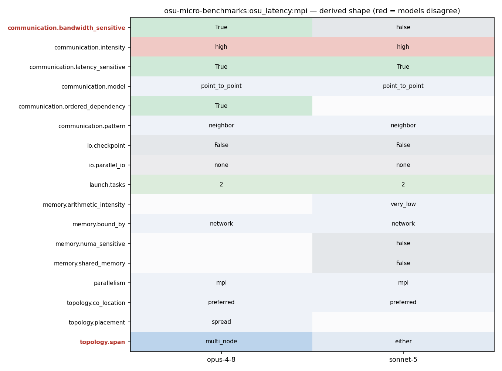

mpirun_rsh -np 2 -hostfile hostfile osu_latency
mpirun_rsh -np 2 -hostfile hostfile osu_latency
135 } 136 fflush(stdout); 137 print_only_header(myid); 138 for (size = options.min_message_size; size <= options.max_message_size; 139 size = (size ? size * 2 : 1)) { 140 num_elements = size / mpi_type_size; 141 if (0 == num_elements) { 142 continue;
174 MPI_CHECK(MPI_Barrier(omb_comm)); 175 t_total = 0.0; 176 177 for (i = 0; i < options.iterations + options.skip; i++) { 178 if (i == options.skip) { 179 omb_papi_start(&papi_eventset); 180 } 181 if (options.validate) { 182 set_buffer_validation(s_buf, r_buf, size, options.accel, i, 183 omb_curr_datatype, omb_buffer_sizes); 184 MPI_CHECK(MPI_Barrier(omb_comm)); 185 } 186 if (myid == 0) { 187 for (j = 0; j <= options.warmup_validation; j++) { 188 if (i >= options.skip && 189 j == options.warmup_validation) { 190 t_start = MPI_Wtime(); 191 } 192 #ifdef _ENABLE_CUDA_KERNEL_ 193 if (options.src == 'M') { 194 touch_managed_src_no_window(s_buf, size, ADD); 195 } 196 #endif /* #ifdef _ENABLE_CUDA_KERNEL_ */ 197 MPI_CHECK(MPI_Send(s_buf, num_elements,
174 MPI_CHECK(MPI_Barrier(omb_comm)); 175 t_total = 0.0; 176 177 for (i = 0; i < options.iterations + options.skip; i++) { 178 if (i == options.skip) { 179 omb_papi_start(&papi_eventset); 180 } 181 if (options.validate) { 182 set_buffer_validation(s_buf, r_buf, size, options.accel, i, 183 omb_curr_datatype, omb_buffer_sizes); 184 MPI_CHECK(MPI_Barrier(omb_comm)); 185 } 186 if (myid == 0) { 187 for (j = 0; j <= options.warmup_validation; j++) { 188 if (i >= options.skip && 189 j == options.warmup_validation) { 190 t_start = MPI_Wtime(); 191 } 192 #ifdef _ENABLE_CUDA_KERNEL_ 193 if (options.src == 'M') { 194 touch_managed_src_no_window(s_buf, size, ADD); 195 } 196 #endif /* #ifdef _ENABLE_CUDA_KERNEL_ */ 197 MPI_CHECK(MPI_Send(s_buf, num_elements,
1 #define BENCHMARK "OSU MPI%s Latency Test" 2 /* 3 * Copyright (c) 2002-2024 the Network-Based Computing Laboratory 4 * (NBCL), The Ohio State University.
275 omb_papi_stop_and_print(&papi_eventset, size); 276 277 if (myid == 0) { 278 double latency = (t_total * 1e6) / (2.0 * options.iterations); 279 fprintf(stdout, "%-*d", 10, size); 280 if (options.validate) { 281 fprintf(stdout, "%*.*f%*s", FIELD_WIDTH, FLOAT_PRECISION,
112 113 Point-to-Point MPI Benchmarks 114 ----------------------------- 115 osu_latency - Latency Test 116 * The latency tests are carried out in a ping-pong fashion. The sender 117 * sends a message with a certain data size to the receiver and waits for a 118 * reply from the receiver. The receiver receives the message from the sender 119 * and sends back a reply with the same data size. Many iterations of this 120 * ping-pong test are carried out and average one-way latency numbers are 121 * obtained. Blocking version of MPI functions (MPI_Send and MPI_Recv) are 122 * used in the tests. This test is available here. 123 124 osu_latency_mt - Multi-threaded Latency Test 125 * The multi-threaded latency test performs a ping-pong test with a single
194 touch_managed_src_no_window(s_buf, size, ADD); 195 } 196 #endif /* #ifdef _ENABLE_CUDA_KERNEL_ */ 197 MPI_CHECK(MPI_Send(s_buf, num_elements, 198 omb_curr_datatype, 1, 1, omb_comm)); 199 MPI_CHECK(MPI_Recv(r_buf, num_elements, 200 omb_curr_datatype, 1, 1, omb_comm, 201 &reqstat)); 202 #ifdef _ENABLE_CUDA_KERNEL_ 203 if (options.src == 'M') { 204 touch_managed_src_no_window(r_buf, size, SUB);
239 touch_managed_dst_no_window(s_buf, size, ADD); 240 } 241 #endif /* #ifdef _ENABLE_CUDA_KERNEL_ */ 242 MPI_CHECK(MPI_Recv(r_buf, num_elements, 243 omb_curr_datatype, 0, 1, omb_comm, 244 &reqstat)); 245 #ifdef _ENABLE_CUDA_KERNEL_ 246 if (options.dst == 'M') { 247 touch_managed_dst_no_window(r_buf, size, SUB); 248 } 249 #endif /* #ifdef _ENABLE_CUDA_KERNEL_ */ 250 MPI_CHECK(MPI_Send(s_buf, num_elements, 251 omb_curr_datatype, 0, 1, omb_comm)); 252 } 253 #ifdef _ENABLE_CUDA_KERNEL_ 254 if (options.validate &&
194 touch_managed_src_no_window(s_buf, size, ADD); 195 } 196 #endif /* #ifdef _ENABLE_CUDA_KERNEL_ */ 197 MPI_CHECK(MPI_Send(s_buf, num_elements, 198 omb_curr_datatype, 1, 1, omb_comm)); 199 MPI_CHECK(MPI_Recv(r_buf, num_elements, 200 omb_curr_datatype, 1, 1, omb_comm, 201 &reqstat)); 202 #ifdef _ENABLE_CUDA_KERNEL_ 203 if (options.src == 'M') { 204 touch_managed_src_no_window(r_buf, size, SUB); 205 } 206 #endif /* #ifdef _ENABLE_CUDA_KERNEL_ */ 207 if (i >= options.skip && 208 j == options.warmup_validation) { 209 t_end = MPI_Wtime(); 210 t_total += calculate_total(t_start, t_end, t_lo); 211 if (options.omb_tail_lat) { 212 omb_lat_arr[i - options.skip] = 213 calculate_total(t_start, t_end, t_lo) * 214 1e6 / 2.0; 215 } 216 if (options.graph) { 217 omb_graph_data->data[i - options.skip] =
183 omb_curr_datatype, omb_buffer_sizes); 184 MPI_CHECK(MPI_Barrier(omb_comm)); 185 } 186 if (myid == 0) { 187 for (j = 0; j <= options.warmup_validation; j++) { 188 if (i >= options.skip && 189 j == options.warmup_validation) { 190 t_start = MPI_Wtime(); 191 } 192 #ifdef _ENABLE_CUDA_KERNEL_ 193 if (options.src == 'M') { 194 touch_managed_src_no_window(s_buf, size, ADD); 195 } 196 #endif /* #ifdef _ENABLE_CUDA_KERNEL_ */ 197 MPI_CHECK(MPI_Send(s_buf, num_elements, 198 omb_curr_datatype, 1, 1, omb_comm)); 199 MPI_CHECK(MPI_Recv(r_buf, num_elements, 200 omb_curr_datatype, 1, 1, omb_comm, 201 &reqstat)); 202 #ifdef _ENABLE_CUDA_KERNEL_ 203 if (options.src == 'M') { 204 touch_managed_src_no_window(r_buf, size, SUB); 205 } 206 #endif /* #ifdef _ENABLE_CUDA_KERNEL_ */
194 touch_managed_src_no_window(s_buf, size, ADD); 195 } 196 #endif /* #ifdef _ENABLE_CUDA_KERNEL_ */ 197 MPI_CHECK(MPI_Send(s_buf, num_elements, 198 omb_curr_datatype, 1, 1, omb_comm)); 199 MPI_CHECK(MPI_Recv(r_buf, num_elements, 200 omb_curr_datatype, 1, 1, omb_comm, 201 &reqstat)); 202 #ifdef _ENABLE_CUDA_KERNEL_ 203 if (options.src == 'M') { 204 touch_managed_src_no_window(r_buf, size, SUB); 205 } 206 #endif /* #ifdef _ENABLE_CUDA_KERNEL_ */ 207 if (i >= options.skip && 208 j == options.warmup_validation) { 209 t_end = MPI_Wtime(); 210 t_total += calculate_total(t_start, t_end, t_lo); 211 if (options.omb_tail_lat) { 212 omb_lat_arr[i - options.skip] = 213 calculate_total(t_start, t_end, t_lo) * 214 1e6 / 2.0; 215 } 216 if (options.graph) { 217 omb_graph_data->data[i - options.skip] =
183 omb_curr_datatype, omb_buffer_sizes); 184 MPI_CHECK(MPI_Barrier(omb_comm)); 185 } 186 if (myid == 0) { 187 for (j = 0; j <= options.warmup_validation; j++) { 188 if (i >= options.skip && 189 j == options.warmup_validation) { 190 t_start = MPI_Wtime(); 191 } 192 #ifdef _ENABLE_CUDA_KERNEL_ 193 if (options.src == 'M') { 194 touch_managed_src_no_window(s_buf, size, ADD); 195 } 196 #endif /* #ifdef _ENABLE_CUDA_KERNEL_ */ 197 MPI_CHECK(MPI_Send(s_buf, num_elements, 198 omb_curr_datatype, 1, 1, omb_comm)); 199 MPI_CHECK(MPI_Recv(r_buf, num_elements, 200 omb_curr_datatype, 1, 1, omb_comm, 201 &reqstat)); 202 #ifdef _ENABLE_CUDA_KERNEL_ 203 if (options.src == 'M') { 204 touch_managed_src_no_window(r_buf, size, SUB); 205 } 206 #endif /* #ifdef _ENABLE_CUDA_KERNEL_ */
103 break; 104 } 105 106 if (numprocs != 2) { 107 if (myid == 0) { 108 fprintf(stderr, "This test requires exactly two processes\n"); 109 } 110 111 omb_mpi_finalize(omb_init_h); 112 exit(EXIT_FAILURE); 113 } 114 115 if (options.buf_num == SINGLE) { 116 if (allocate_memory_pt2pt(&s_buf, &r_buf, myid)) {
935 * MPI_Finalize. 936 * 937 * Example: 938 * - time mpirun_rsh -np 2 -hostfile hostfile osu_hello 939 940 ROCm, CUDA and OpenACC Extensions to OMB 941 ----------------------------------------
103 break; 104 } 105 106 if (numprocs != 2) { 107 if (myid == 0) { 108 fprintf(stderr, "This test requires exactly two processes\n"); 109 } 110 111 omb_mpi_finalize(omb_init_h); 112 exit(EXIT_FAILURE); 113 } 114 115 if (options.buf_num == SINGLE) { 116 if (allocate_memory_pt2pt(&s_buf, &r_buf, myid)) {
1037 1038 Examples: 1039 1040 - mpirun_rsh -np 2 -hostfile hostfile MV2_USE_CUDA=1 osu_latency D D 1041 - mpirun_rsh -np 2 -hostfile hostfile MV2_USE_ROCM=1 osu_latency D D 1042 1043 In this run, the latency test allocates buffers at both rank 0 and rank 1 on
194 touch_managed_src_no_window(s_buf, size, ADD); 195 } 196 #endif /* #ifdef _ENABLE_CUDA_KERNEL_ */ 197 MPI_CHECK(MPI_Send(s_buf, num_elements, 198 omb_curr_datatype, 1, 1, omb_comm)); 199 MPI_CHECK(MPI_Recv(r_buf, num_elements, 200 omb_curr_datatype, 1, 1, omb_comm, 201 &reqstat)); 202 #ifdef _ENABLE_CUDA_KERNEL_ 203 if (options.src == 'M') { 204 touch_managed_src_no_window(r_buf, size, SUB); 205 } 206 #endif /* #ifdef _ENABLE_CUDA_KERNEL_ */ 207 if (i >= options.skip && 208 j == options.warmup_validation) { 209 t_end = MPI_Wtime(); 210 t_total += calculate_total(t_start, t_end, t_lo); 211 if (options.omb_tail_lat) { 212 omb_lat_arr[i - options.skip] = 213 calculate_total(t_start, t_end, t_lo) * 214 1e6 / 2.0; 215 } 216 if (options.graph) { 217 omb_graph_data->data[i - options.skip] =
183 omb_curr_datatype, omb_buffer_sizes); 184 MPI_CHECK(MPI_Barrier(omb_comm)); 185 } 186 if (myid == 0) { 187 for (j = 0; j <= options.warmup_validation; j++) { 188 if (i >= options.skip && 189 j == options.warmup_validation) { 190 t_start = MPI_Wtime(); 191 } 192 #ifdef _ENABLE_CUDA_KERNEL_ 193 if (options.src == 'M') { 194 touch_managed_src_no_window(s_buf, size, ADD); 195 } 196 #endif /* #ifdef _ENABLE_CUDA_KERNEL_ */ 197 MPI_CHECK(MPI_Send(s_buf, num_elements, 198 omb_curr_datatype, 1, 1, omb_comm)); 199 MPI_CHECK(MPI_Recv(r_buf, num_elements, 200 omb_curr_datatype, 1, 1, omb_comm, 201 &reqstat)); 202 #ifdef _ENABLE_CUDA_KERNEL_ 203 if (options.src == 'M') { 204 touch_managed_src_no_window(r_buf, size, SUB); 205 } 206 #endif /* #ifdef _ENABLE_CUDA_KERNEL_ */
174 MPI_CHECK(MPI_Barrier(omb_comm)); 175 t_total = 0.0; 176 177 for (i = 0; i < options.iterations + options.skip; i++) { 178 if (i == options.skip) { 179 omb_papi_start(&papi_eventset); 180 } 181 if (options.validate) { 182 set_buffer_validation(s_buf, r_buf, size, options.accel, i, 183 omb_curr_datatype, omb_buffer_sizes); 184 MPI_CHECK(MPI_Barrier(omb_comm)); 185 } 186 if (myid == 0) { 187 for (j = 0; j <= options.warmup_validation; j++) { 188 if (i >= options.skip && 189 j == options.warmup_validation) { 190 t_start = MPI_Wtime(); 191 } 192 #ifdef _ENABLE_CUDA_KERNEL_ 193 if (options.src == 'M') { 194 touch_managed_src_no_window(s_buf, size, ADD); 195 } 196 #endif /* #ifdef _ENABLE_CUDA_KERNEL_ */ 197 MPI_CHECK(MPI_Send(s_buf, num_elements,
55 OMB_CHECK_NULL_AND_EXIT(omb_lat_arr, "Unable to allocate memory"); 56 } 57 58 omb_init_h = omb_mpi_init(&argc, &argv); 59 omb_comm = omb_init_h.omb_comm; 60 if (MPI_COMM_NULL == omb_comm) { 61 OMB_ERROR_EXIT("Cant create communicator");
194 touch_managed_src_no_window(s_buf, size, ADD); 195 } 196 #endif /* #ifdef _ENABLE_CUDA_KERNEL_ */ 197 MPI_CHECK(MPI_Send(s_buf, num_elements, 198 omb_curr_datatype, 1, 1, omb_comm)); 199 MPI_CHECK(MPI_Recv(r_buf, num_elements, 200 omb_curr_datatype, 1, 1, omb_comm, 201 &reqstat)); 202 #ifdef _ENABLE_CUDA_KERNEL_ 203 if (options.src == 'M') {
55 OMB_CHECK_NULL_AND_EXIT(omb_lat_arr, "Unable to allocate memory"); 56 } 57 58 omb_init_h = omb_mpi_init(&argc, &argv); 59 omb_comm = omb_init_h.omb_comm; 60 if (MPI_COMM_NULL == omb_comm) { 61 OMB_ERROR_EXIT("Cant create communicator"); 62 } 63 MPI_CHECK(MPI_Comm_rank(omb_comm, &myid)); 64 MPI_CHECK(MPI_Comm_size(omb_comm, &numprocs)); 65 66 omb_graph_options_init(&omb_graph_options); 67 if (0 == myid) {
174 MPI_CHECK(MPI_Barrier(omb_comm)); 175 t_total = 0.0; 176 177 for (i = 0; i < options.iterations + options.skip; i++) { 178 if (i == options.skip) { 179 omb_papi_start(&papi_eventset); 180 } 181 if (options.validate) { 182 set_buffer_validation(s_buf, r_buf, size, options.accel, i, 183 omb_curr_datatype, omb_buffer_sizes); 184 MPI_CHECK(MPI_Barrier(omb_comm)); 185 } 186 if (myid == 0) { 187 for (j = 0; j <= options.warmup_validation; j++) { 188 if (i >= options.skip && 189 j == options.warmup_validation) { 190 t_start = MPI_Wtime(); 191 } 192 #ifdef _ENABLE_CUDA_KERNEL_ 193 if (options.src == 'M') { 194 touch_managed_src_no_window(s_buf, size, ADD); 195 } 196 #endif /* #ifdef _ENABLE_CUDA_KERNEL_ */ 197 MPI_CHECK(MPI_Send(s_buf, num_elements,
103 break; 104 } 105 106 if (numprocs != 2) { 107 if (myid == 0) { 108 fprintf(stderr, "This test requires exactly two processes\n"); 109 } 110 111 omb_mpi_finalize(omb_init_h); 112 exit(EXIT_FAILURE); 113 } 114 115 if (options.buf_num == SINGLE) { 116 if (allocate_memory_pt2pt(&s_buf, &r_buf, myid)) {
1037 1038 Examples: 1039 1040 - mpirun_rsh -np 2 -hostfile hostfile MV2_USE_CUDA=1 osu_latency D D 1041 - mpirun_rsh -np 2 -hostfile hostfile MV2_USE_ROCM=1 osu_latency D D 1042 1043 In this run, the latency test allocates buffers at both rank 0 and rank 1 on
103 break; 104 } 105 106 if (numprocs != 2) { 107 if (myid == 0) { 108 fprintf(stderr, "This test requires exactly two processes\n"); 109 } 110 111 omb_mpi_finalize(omb_init_h); 112 exit(EXIT_FAILURE); 113 } 114 115 if (options.buf_num == SINGLE) { 116 if (allocate_memory_pt2pt(&s_buf, &r_buf, myid)) {